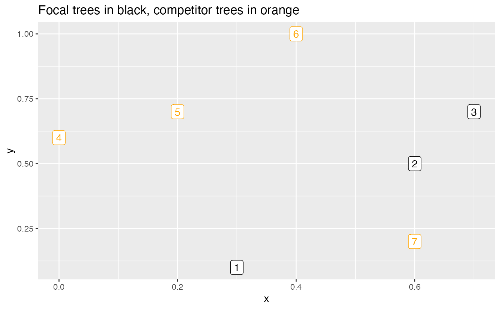

R/spatial_functions.R
focal_vs_comp_distance.RdReturn all pairwise distances between two data frames of trees
focal_vs_comp_distance(focal_trees, comp_trees)
| focal_trees | An |
|---|---|
| comp_trees | An |
A data frame with three columns: focal_ID of focal tree,
comp_dist of competitor tree, and dist of distance between
them.
Other spatial functions:
add_buffer_variable(),
compute_buffer_region()
library(tibble) library(ggplot2) library(sf) # Create toy example focal and competitor trees focal_trees <- tibble( focal_ID = c(1, 2, 3), x = c(0.3, 0.6, 0.7), y = c(0.1, 0.5, 0.7) ) %>% st_as_sf(coords = c("x", "y")) comp_trees <- tibble( comp_ID = c(4, 5, 6, 7), x = c(0, 0.2, 0.4, 0.6), y = c(0.6, 0.7, 1, 0.2) ) %>% st_as_sf(coords = c("x", "y")) # Plot both sets of trees ggplot() + geom_sf_label(data = focal_trees, aes(label = focal_ID), col = "black") + geom_sf_label(data = comp_trees, aes(label = comp_ID), col = "orange") + labs(title = "Focal trees in black, competitor trees in orange")# Compute corresponding distances between the 3 focal trees and 4 competitor trees focal_vs_comp_distance(focal_trees, comp_trees)#> # A tibble: 12 × 3 #> focal_ID comp_ID dist #> <dbl> <dbl> <dbl> #> 1 1 4 0.583 #> 2 1 5 0.608 #> 3 1 6 0.906 #> 4 1 7 0.316 #> 5 2 4 0.608 #> 6 2 5 0.447 #> 7 2 6 0.539 #> 8 2 7 0.3 #> 9 3 4 0.707 #> 10 3 5 0.5 #> 11 3 6 0.424 #> 12 3 7 0.510